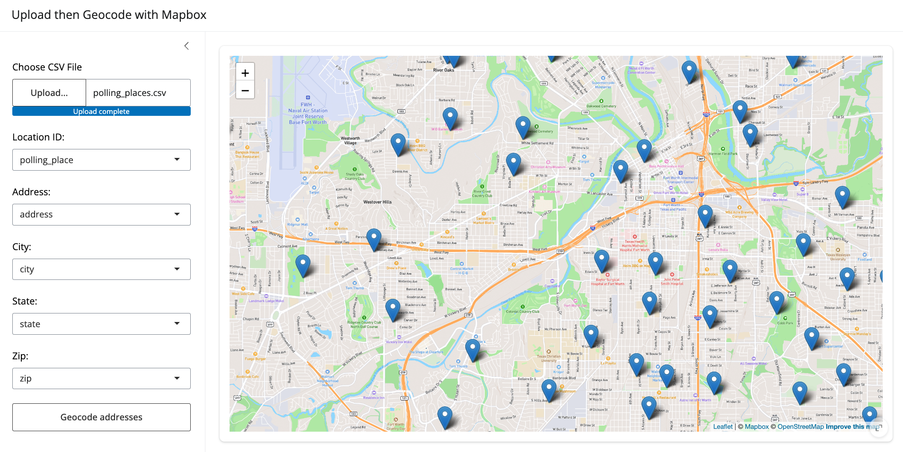
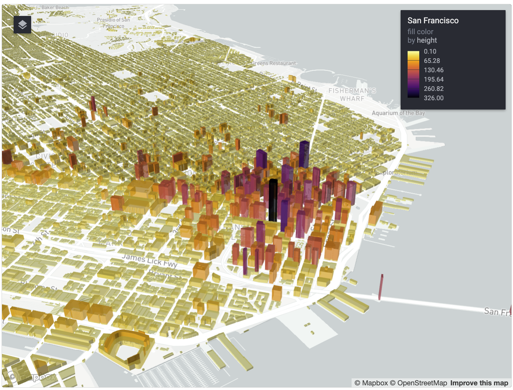
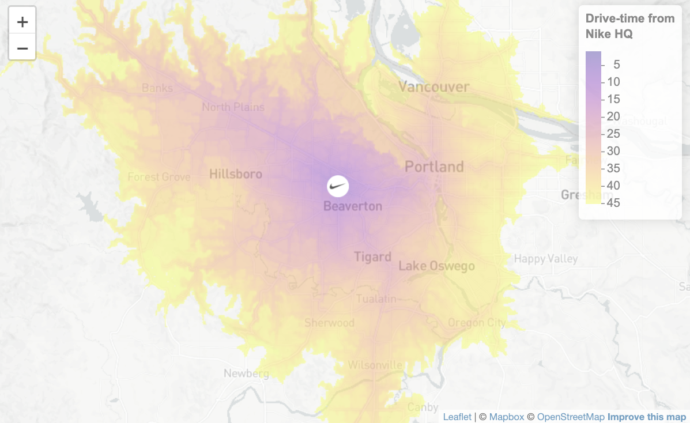
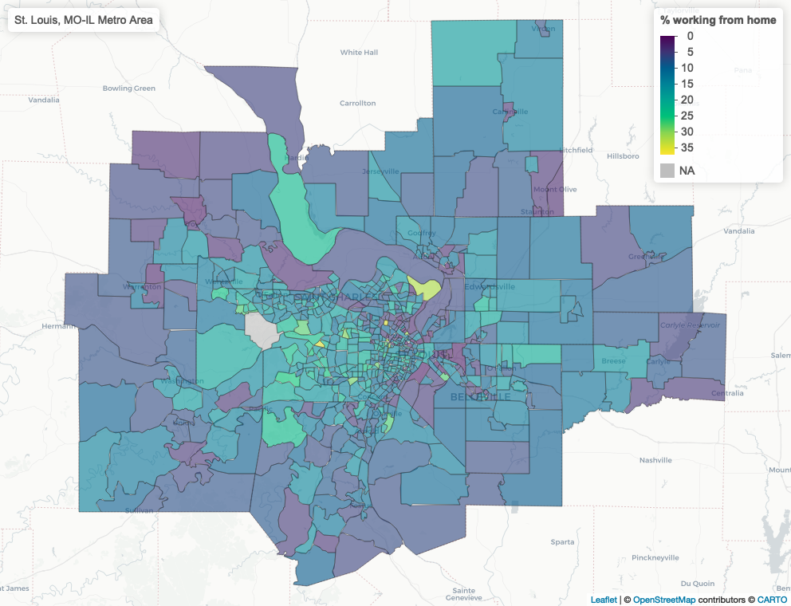

WALKER DATA
About
Blog
Workshops
Categories
All
(11)
census
(1)
data science
(11)
gis
(11)
navigation
(2)
open data
(1)
python
(7)
r
(4)
spatial analysis
(3)
Order By
Default
Title
Date - Oldest
Date - Newest
Author

Drag-and-drop address geocoding with Mapbox in Shiny
r
gis
data science
spatial analysis
Last month, I led the workshops “Location Intelligence with R and Mapbox” and “Building Web Mapping Applications with R and Shiny”. In each workshop, I debuted brand-new…
Jun 4, 2024
Kyle Walker

Getting and visualizing Overture Maps buildings data in R
r
gis
data science
spatial analysis
open data
I’ve been following with great interest the development of the Overture Maps Datasets. Overture is a collaborative project from Microsoft, Amazon, Meta, and many others to…
May 17, 2024
Kyle Walker

Visualizing accessibility surfaces in R
r
gis
data science
spatial analysis
In November, I completed the 30 Day Map Challenge for the first time. I posted all of my submissions to Twitter/X and LinkedIn, and observed how the community reacted to…
Jan 19, 2024
Kyle Walker

Iterative ‘mapping’ in R
r
gis
data science
census
My book
Analyzing US Census Data: Methods, Maps, and Models in R
, published last year, covers a lot of the data science tips and tricks I’ve learned over the years. In my…
Jan 15, 2024
Kyle Walker
Travel-time isochrones with Mapbox, Python, and GeoPandas
python
gis
data science
navigation
Travel-time isochrones
are powerful analytical tools that represent the reachable area from a location for a given time and travel mode. In R, my package mapboxapi seamlessly…
Aug 10, 2023
Kyle Walker
Building custom regions from 2020 Census blocks in Python
python
gis
data science
Earlier this month, I gave a two-part workshop series on analyzing the newly-released 2020 Decennial US Census Data with R. If you missed out on the workshop series, you can…
Jun 26, 2023
Kyle Walker
Mapping jobs and commutes with 2020 LODES data and deck.gl
python
gis
data science
Last month, version 8 of the LEHD Origin-Destination Employment Statistics (LODES) dataset was released. This long-awaited release includes data on workplaces, residences…
May 17, 2023
Kyle Walker
Using your favorite Python packages in ArcGIS Pro
python
gis
data science
Last week, I gave a workshop on working with geographic data in Python with the University of Michigan’s Social Science Data Analysis Network. The workshop focused on
pygris
…
Feb 28, 2023
Kyle Walker
Distance and proximity analysis in Python
python
gis
data science
navigation
Spatial data science projects frequently require the calculation of
proximity
to resources. Analysts in fields like health care, real estate, retail, education, and more are…
Jan 23, 2023
Kyle Walker
Analyzing labor markets in Python with LODES data
python
gis
data science
In Chapter 11 of my book
Analyzing US Census Data
, I explore a sampling of the variety of government datasets that are available for the United States. One of the most…
Jan 11, 2023
Kyle Walker
Exploratory spatial data analysis with Python
python
gis
data science
In early 2023, the print copy of my book
Analyzing US Census Data: Methods, Maps, and Models in R
will be available for purchase. The response to the free online version of…
Dec 20, 2022
Kyle Walker
No matching items